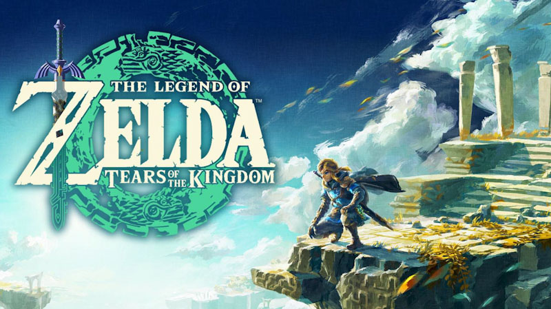

21 de Jun de 2023
Representatividade latina no Met Gala ao longo dos anos
O Met Gala é um dos eventos mais prestigiados da indústria da moda e tem sido uma plataforma para celebrar a diversidade e a criatividade ao longo dos anos.
Ao longo das edições do Met Gala, inúmeros artistas, estilistas e personalidades latinas deixaram sua marca no tapete vermelho, trazendo a riqueza e o estilo cultural latino para o centro das atenções.
Nomes como Oscar de la Renta, Carolina Herrera e Rei Kawakubo da Comme des Garçons são apenas alguns dos designers latino-americanos que deixaram uma marca duradoura no mundo da moda através de suas criações icônicas apresentadas no tapete vermelho do Met Gala.
Cada um deles trouxe sua própria perspectiva e estilo latino para o evento, deixando uma impressão duradoura na indústria da moda e inspirando outros a abraçarem suas raízes culturais.
Embora a representatividade latina no Met Gala tenha aumentado ao longo dos anos, é importante destacar que ainda há muito a ser feito para garantir a inclusão e o reconhecimento de todas as vozes latinas.
A indústria da moda continua a enfrentar desafios em termos de diversidade e igualdade, e é fundamental que sejam tomadas medidas para garantir que todas as comunidades sejam representadas de maneira justa e autêntica.
No entanto, é encorajador ver a crescente presença de talentos latinos no Met Gala e a maneira como eles têm contribuído para ampliar o alcance da cultura latina na esfera global da moda e do entretenimento.

21 de Jun de 2023
Rivalidade feminina onde? Se eu sei que sou melhor que essa "v4d1a"
A rivalidade feminina é um tema que muitas vezes permeia as narrativas e representações femininas no cinema. No entanto, uma abordagem interessante para evitar essa rivalidade é a substituição de uma personagem feminina por um personagem masculino no novo filme live action da Barbie.
Essa escolha pode proporcionar uma nova perspectiva, mostrando a importância da colaboração e do apoio mútuo entre as mulheres, em vez de alimentar a competição. Ao destacar a união e a solidariedade, o filme tem o potencial de transmitir mensagens positivas sobre o empoderamento feminino, incentivando as espectadoras a se apoiarem e celebrarem as conquistas umas das outras.

21 de Jun de 2023
Taylor Swift: 'Já eras tour' no Brasil
Um problema recorrente em eventos de grande demanda, como os shows da Taylor Swift, são os cambistas.
Cambistas são pessoas que compram ingressos em grande quantidade com o objetivo de revendê-los por preços muito mais altos, aproveitando-se da demanda e da dificuldade dos fãs em conseguir ingressos genuínos.
Além de ser uma atividade ilegal, os cambistas prejudicam os fãs legítimos ao inflacionar os preços dos ingressos, tornando-os inacessíveis para muitas pessoas que gostariam de assistir aos shows.
Ao comprar ingressos diretamente dos canais oficiais, os fãs têm uma garantia maior de que estão adquirindo ingressos válidos e autênticos.
Os shows da Taylor Swift no Brasil têm sido muito aguardados e disputados, e a presença de cambistas é um desafio enfrentado pelos organizadores de eventos.
É importante que tanto os fãs quanto as autoridades continuem a tomar medidas para combater essa prática ilegal, garantindo que os ingressos sejam vendidos a preços justos e acessíveis para todos que desejam assistir aos shows de seus artistas favoritos.

21 de Jun de 2023
O link é 🫳🏳️🌈?
A teoria de que o personagem Link, da série de jogos "The Legend of Zelda", é gay é um tópico que tem gerado discussões e especulações entre os fãs.
É importante observar que essa teoria não tem confirmação oficial da Nintendo, a desenvolvedora dos jogos, e se baseia principalmente em interpretações subjetivas e leituras pessoais dos jogadores.
A origem dessa teoria remonta ao fato de que a série "The Legend of Zelda" é conhecida por suas narrativas complexas e personagens carismáticos, e muitos fãs têm explorado a possibilidade de relacionamentos além do tradicionalmente retratado entre Link e a Princesa Zelda.
No entanto, até o momento, a Nintendo não explorou abertamente a sexualidade de Link ou de outros personagens principais da série "The Legend of Zelda".
Essas teorias e discussões mostram a importância do envolvimento e da identificação emocional dos jogadores com os personagens, independentemente de sua orientação sexual.
A interpretação dos personagens e suas histórias é, em última instância, uma questão pessoal e subjetiva que pode variar de jogador para jogador.